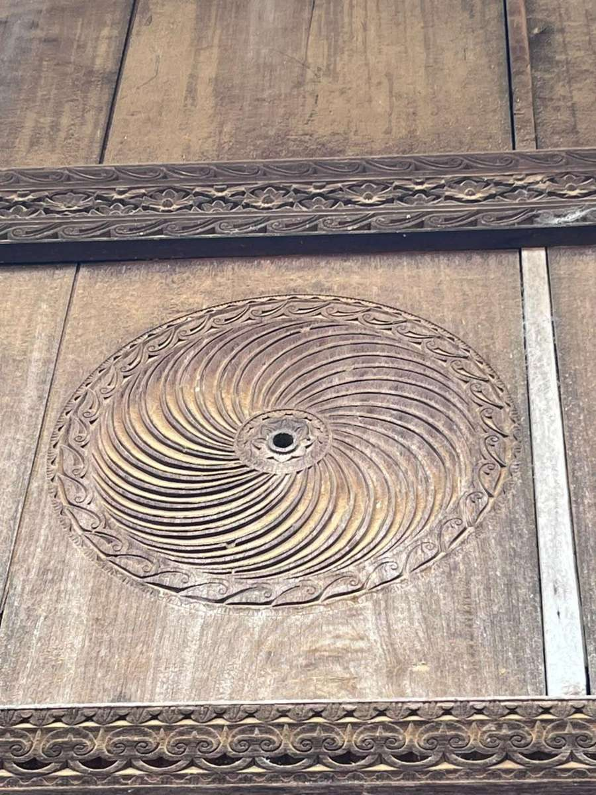
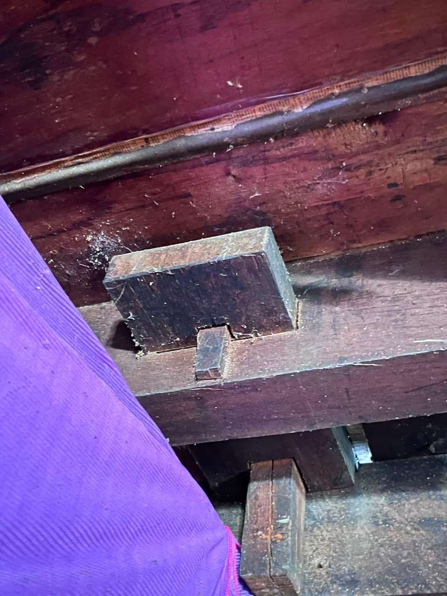
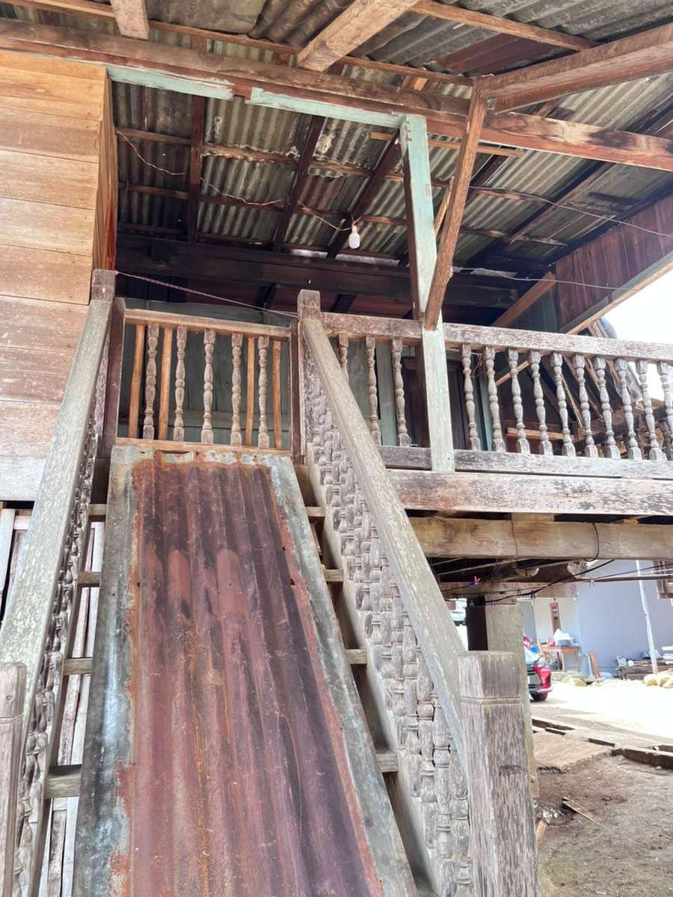
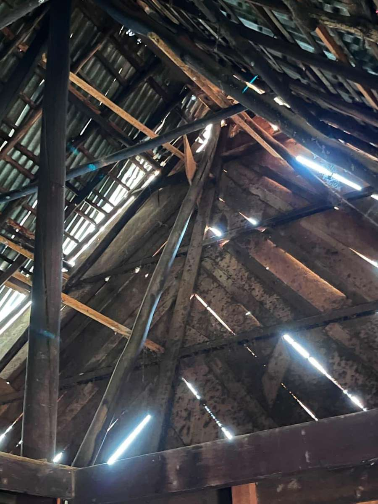
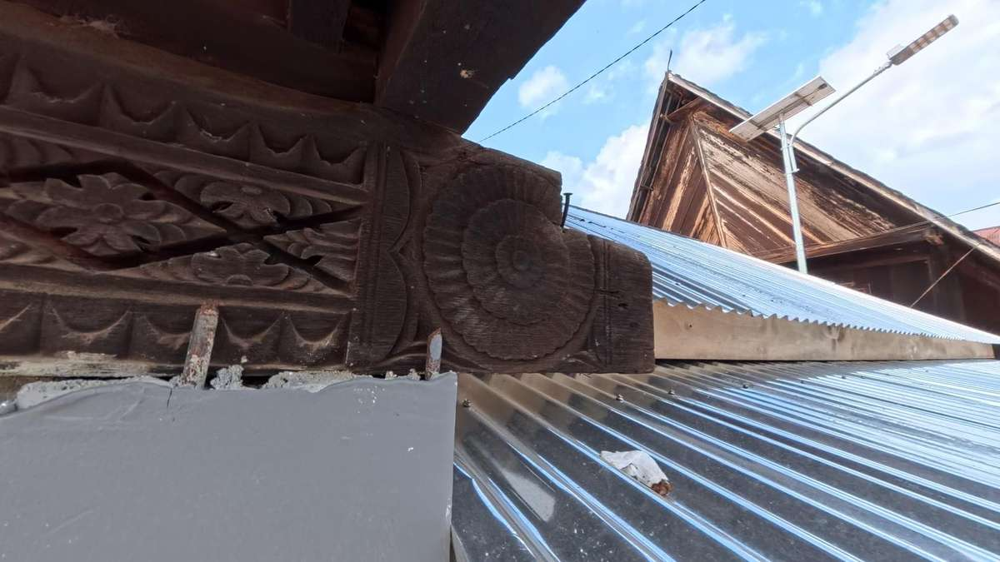
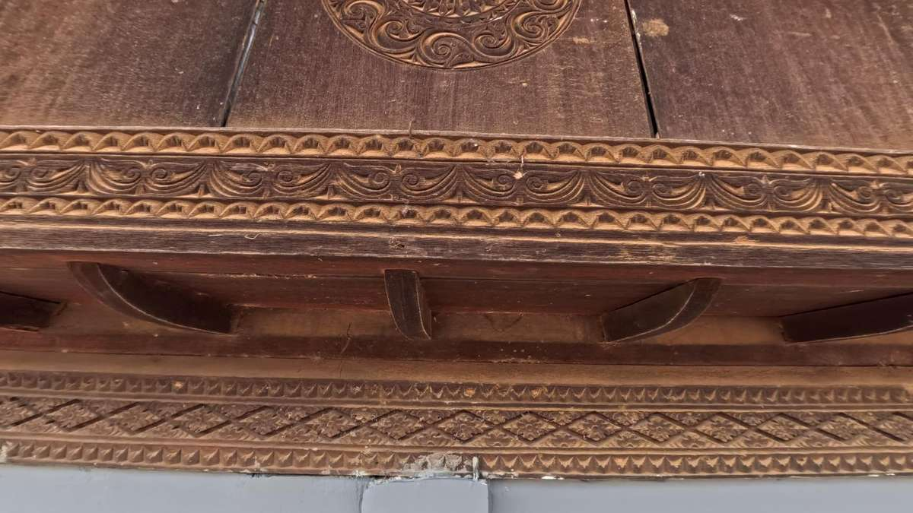
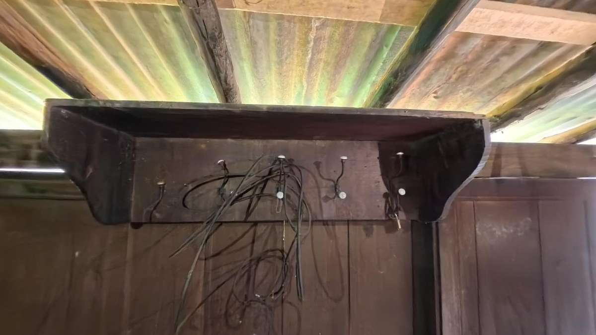
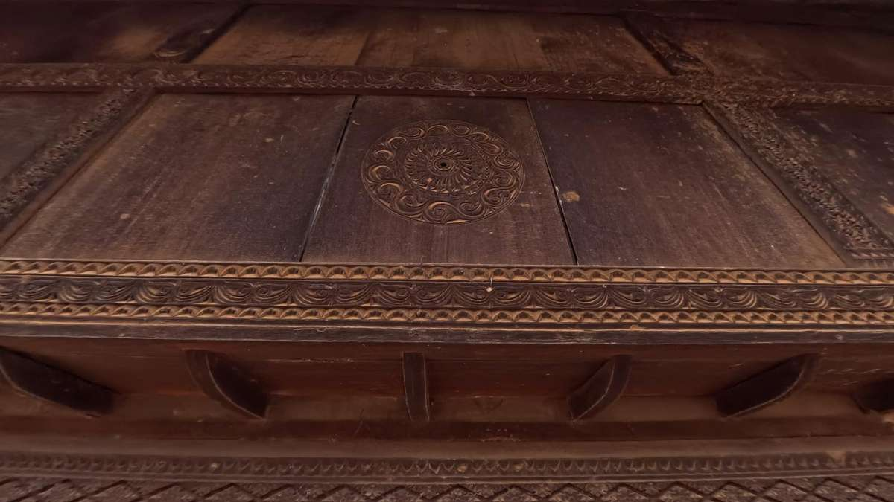

Ciri Khas
Ghuma Baghi Desa Plang Kenidai merupakan rumah tradisional masyarakat Besemah yang bercirikan bentuk rumah panggung berbahan kayu, atap tinggi, serta ukiran khas yang sarat makna budaya.
Selain berfungsi sebagai tempat tinggal, Ghuma Baghi menjadi simbol identitas, sejarah keluarga, dan kearifan lokal masyarakat Besemah yang terus dijaga sebagai warisan budaya di Kota Pagar Alam.

Motif Bunga bintang/bunga Mata Angin
Melambangkan:
- Melambangkan arah kegidupan dan keseimbangan
- Simbol persatuan keluarga dan perlindungan rumah
- Kadang juga diartikan sebagai cahaya atau petunjuk hidup

Motif Sulur Daun/Pucuk rebung
Melambangkan:
- Melambangkan pertumbuhan dan kemakmuran
- Kehidupan yang terus berkembang
- Kesopanan dan kelembutan dalam adat Melayu

Motif bunga berantai
Melambangkan:
- Ikatan kekeluargaan
- Kebersamaan dan gotong royong
- Hubungan yang tidak terputus antar keluarga

Motif lingkaran spiral
Melambangkan:
- Siklus kehidupan
- Keharmonisan alam
- Kesatuan antara manusia dan alam sekitar

Motif bulan sabit dan tumbuhan
Melambangkan:
- Pengaruh budaya islam
- Kesuburan dan kehidupan
- Harapan akan keberkahan
Fungsi Ukiran
- Penanda status sosial pemilik rumah
- Simbol adat dan kepercayaan
- Bentuk doa agar rumah diberi keselamatan dan rezeki
Galeri Budaya
Kumpulan foto dari berbagai aspek budaya yang terkait dengan cerita dan ciri khas lokal.







